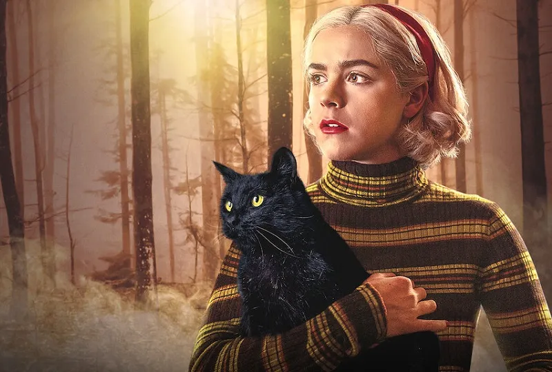

Netflix: Top Melhores Séries
Olá, esse será um top séries da Netflix (baseado na minha experiência).
Eu fiz um top 3 das minha séries favoritas que eu assisti.
Top 1:
Mundo Sombrio de Sabrina (2018-2020)
Sinopse:
Sabrina Spellman luta com sua natureza dupla - metade bruxa, metade mortal - enquanto se levanta contra as
forças do mal que a ameaçam, sua família e o mundo humano.
Se você quer ver uma trama abordando bruxas, essa é a série certa, Sabrina Spellmann (Kiernan Shipka) é uma
jovem meio bruxa e meio humana, que luta contra o mal que vem sobre sua cidade GreenDale então ela deve deixar
sua vida humana para ter uma vida totalmente bruxa.
Essa série aborda vários assuntos como racismo, transfobia e etc...
Mas o centro de tudo é a Sabrina e suas aventuras sombrias no mundo bruxo.

Top 2
Stranger Things (2016-atualmente)
Sinopse:
Um grupo de amigos se envolve em uma série de eventos sobrenaturais na pacata cidade de Hawkins. Eles enfrentam
criaturas monstruosas, agências secretas do governo e se aventuram em dimensões paralelas.
Se você gosta de séries envolvendo adolescentes, você está no lugar certo Stranger Things é uma série que fala
sobre um grupo de amigos que ajuda uma menina chamada de Eleven (Millie Bobby Brown) que escapou de um
laboratório, após estranhos acontecimentos sobrenaturais.
É uma série muito intrigante, porque existem portais, que levam à realidades paralelas, mas existem muitos
momentos tristes então preparem seus lenços de papéis pois você irá chorar.
 Top 3
Wandinha (2022-atualmente ? )
Sinopse:
Inteligente, sarcástica e apática, Wandinha Addams pode estar meio morta por dentro, mas na Escola Nunca Mais
ela vai fazer amigos, inimigos e investigar assassinatos.
Uma das queridinhas da cultura gótica e mística, estreou na plataforma e fez um verdadeiro sucesso, Wnadinha
Addams (Jenna Ortega) é uma menina misteriosa, tendo sempre uma visão negativa das coisas, também muito atraída
pela Morte, Wandinha chega à Escola Nunca Mais e descobre que assassinatos estão ocorrendo e estão sem solução
então, a mesma resolve investigar.
Wandinha me surpreendeu porque mostra mais sobre a personagem que existia apenas em quadrinhos e em filmes,
então a série aborda mais sobre os medos e traumas que Wandinha teve em seu passado.
Top 3
Wandinha (2022-atualmente ? )
Sinopse:
Inteligente, sarcástica e apática, Wandinha Addams pode estar meio morta por dentro, mas na Escola Nunca Mais
ela vai fazer amigos, inimigos e investigar assassinatos.
Uma das queridinhas da cultura gótica e mística, estreou na plataforma e fez um verdadeiro sucesso, Wnadinha
Addams (Jenna Ortega) é uma menina misteriosa, tendo sempre uma visão negativa das coisas, também muito atraída
pela Morte, Wandinha chega à Escola Nunca Mais e descobre que assassinatos estão ocorrendo e estão sem solução
então, a mesma resolve investigar.
Wandinha me surpreendeu porque mostra mais sobre a personagem que existia apenas em quadrinhos e em filmes,
então a série aborda mais sobre os medos e traumas que Wandinha teve em seu passado.